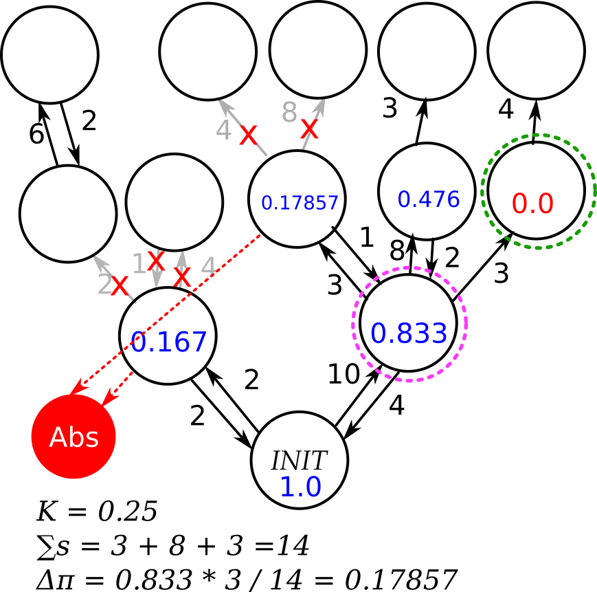

Step 5
- We truncate that state, and move to the next one.
- This continues until we cannot explore further.
After the inner loop of the algorithm finishes:
- If perimeter reachability is greater than the desired window, κ is reduced to expand exploration
- STAMINA 2.0: Exploration continues from the initial state
- STAMINA 2.5: Exploration continues from the list of truncated states, in the order they were truncated.
- STAMINA 2.5 also lets multiple threads perform this exploration asynchronously.